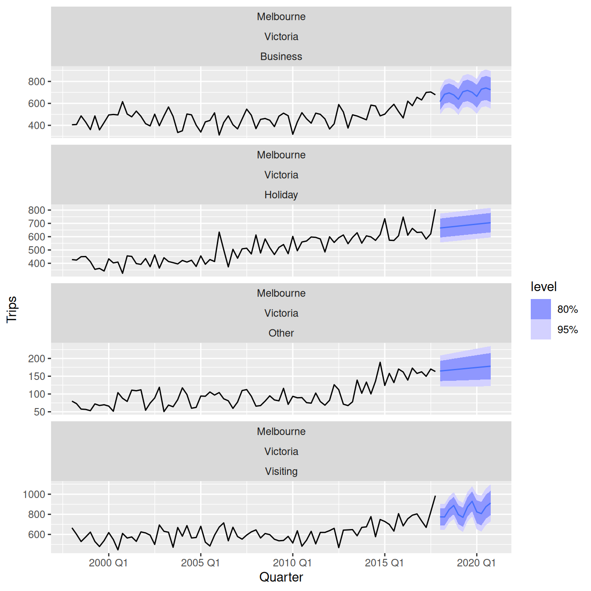
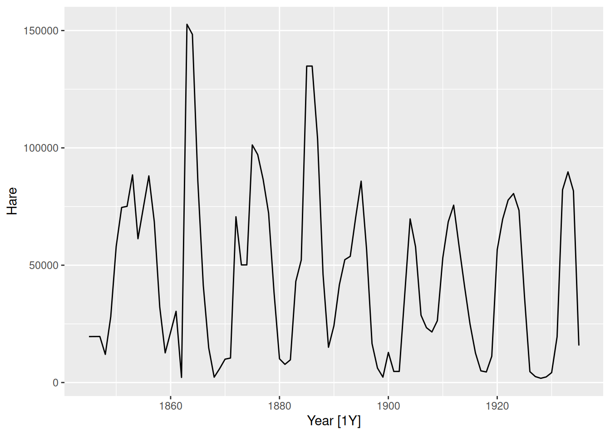
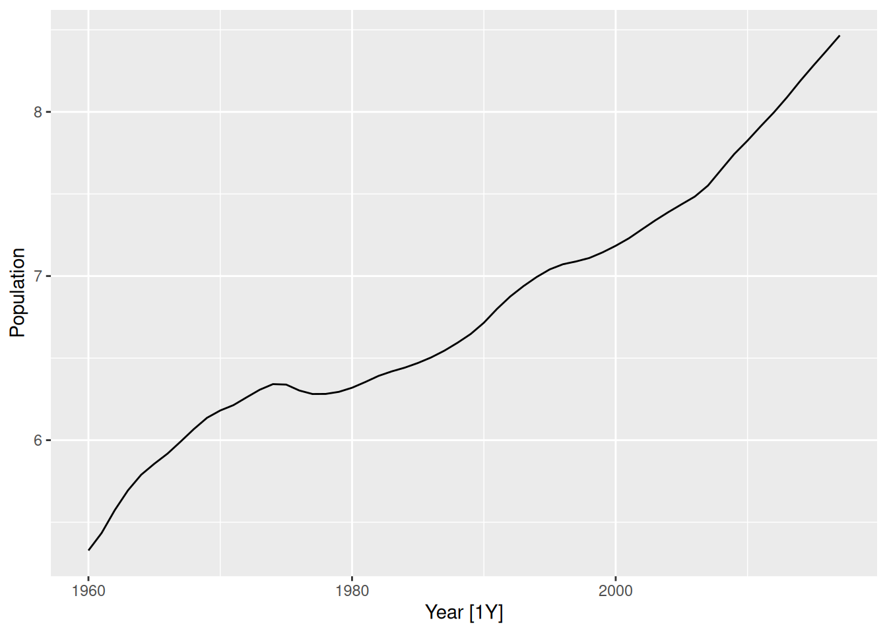

aus_production |>
autoplot(Electricity)Exercise Week 10: Solutions
fpp3 9.11, Ex11
Choose one of the following seasonal time series: the Australian production of electricity, cement, or gas (from
aus_production).
- Do the data need transforming? If so, find a suitable transformation.
Yes, these need transforming.
lambda <- aus_production |>
features(Electricity, guerrero) |>
pull(lambda_guerrero)
aus_production |>
autoplot(box_cox(Electricity, lambda))guerrero() suggests using Box-Cox transformation with parameter \lambda=0.52.
- Are the data stationary? If not, find an appropriate differencing which yields stationary data.
The trend and seasonality show that the data are not stationary.
aus_production |>
gg_tsdisplay(box_cox(Electricity, lambda) |> difference(4), plot_type = "partial")aus_production |>
gg_tsdisplay(box_cox(Electricity, lambda) |> difference(4) |> difference(1), plot_type = "partial")It seems that we could have continued with only taking seasonal differences. You may try this option. We opt to take a first order difference as well.
- Identify a couple of ARIMA models that might be useful in describing the time series. Which of your models is the best according to their AIC values?
From the above graph, an AR(1) or an MA(1) with a seasonal MA(2) might work. So an ARIMA(1,1,0)(0,1,2) model for the transformed data.
fit <- aus_production |>
model(
manual = ARIMA(box_cox(Electricity, lambda) ~ 0 + pdq(1, 1, 0) + PDQ(0, 1, 2)),
auto = ARIMA(box_cox(Electricity, lambda))
)
fit |>
select(auto) |>
report()Series: Electricity
Model: ARIMA(1,1,4)(0,1,1)[4]
Transformation: box_cox(Electricity, lambda)
Coefficients:
ar1 ma1 ma2 ma3 ma4 sma1
-0.7030 0.2430 -0.4477 -0.1553 -0.2452 -0.5574
s.e. 0.1739 0.1943 0.0973 0.0931 0.1189 0.1087
sigma^2 estimated as 18.02: log likelihood=-609.08
AIC=1232.17 AICc=1232.71 BIC=1255.7glance(fit)# A tibble: 2 × 8
.model sigma2 log_lik AIC AICc BIC ar_roots ma_roots
<chr> <dbl> <dbl> <dbl> <dbl> <dbl> <list> <list>
1 manual 19.7 -620. 1247. 1248. 1261. <cpl [1]> <cpl [8]>
2 auto 18.0 -609. 1232. 1233. 1256. <cpl [1]> <cpl [8]>Automatic model selection with ARIMA() has also taken a first order difference, and so we can compare the AICc values. This is a challenging ARIMA model to select manually and the automatic model is clearly better.
- Estimate the parameters of your best model and do diagnostic testing on the residuals. Do the residuals resemble white noise? If not, try to find another ARIMA model which fits better.
fit |>
select(auto) |>
gg_tsresiduals()fit |>
select(auto) |>
augment() |>
features(.innov, ljung_box, dof = 6, lag = 12)# A tibble: 1 × 3
.model lb_stat lb_pvalue
<chr> <dbl> <dbl>
1 auto 8.45 0.207Residuals look reasonable, they resemble white noise.
- Forecast the next 24 months of data using your preferred model.
fit |>
select(auto) |>
forecast(h = "2 years") |>
autoplot(aus_production)
- Compare the forecasts obtained using
ETS().
aus_production |>
model(ETS(Electricity)) |>
forecast(h = "2 years") |>
autoplot(aus_production)aus_production |>
model(ETS(Electricity)) |>
forecast(h = "2 years") |>
autoplot(aus_production |> filter(year(Quarter) >= 2000)) +
autolayer(fit |> select(auto) |> forecast(h = "2 years"), colour = "red", alpha = 0.4)The point forecasts appear to be quite similar. The ETS forecasts have a wider forecast interval than the ARIMA forecasts.
fpp3 9.11, Ex12
For the same time series you used in the previous exercise, try using a non-seasonal model applied to the seasonally adjusted data obtained from STL. Compare the forecasts with those obtained in the previous exercise. Which do you think is the best approach?
lambda <- aus_production |>
features(Electricity, guerrero) |>
pull(lambda_guerrero)
stlarima <- decomposition_model(
STL(box_cox(Electricity, lambda)),
ARIMA(season_adjust)
)
fc <- aus_production |>
model(
ets = ETS(Electricity),
arima = ARIMA(box_cox(Electricity, lambda)),
stlarima = stlarima
) |>
forecast(h = "2 years")
fc |> autoplot(aus_production |> filter(year(Quarter) > 2000), level=95)The STL-ARIMA approach has higher values and narrower prediction intervals. It is hard to know which is best without comparing against a test set.
fpp3 9.11, Ex13
For the Australian tourism data (from
tourism): a. Fit a suitable ARIMA model for all data. b. Produce forecasts of your fitted models. c. Check the forecasts for the “Snowy Mountains” and “Melbourne” regions. Do they look reasonable?
fit <- tourism |>
model(arima = ARIMA(Trips))
fc <- fit |> forecast(h="3 years")
fc |>
filter(Region == "Snowy Mountains") |>
autoplot(tourism)fc |>
filter(Region == "Melbourne") |>
autoplot(tourism)
Both sets of forecasts appear to have captured the underlying trend and seasonality effectively.
fpp3 9.11, Ex14
For your retail time series (Exercise 5): a. develop an appropriate seasonal ARIMA model;
set.seed(12345678)
myseries <- aus_retail |>
filter(
`Series ID` == sample(aus_retail$`Series ID`, 1),
Month < yearmonth("2018 Jan")
)
fit <- myseries |>
model(arima = ARIMA(log(Turnover)))
report(fit)Series: Turnover
Model: ARIMA(1,0,2)(1,1,1)[12] w/ drift
Transformation: log(Turnover)
Coefficients:
ar1 ma1 ma2 sar1 sma1 constant
0.9635 -0.3968 0.0538 0.1518 -0.8869 0.0016
s.e. 0.0190 0.0574 0.0555 0.0807 0.0643 0.0003
sigma^2 estimated as 0.004626: log likelihood=432.96
AIC=-851.91 AICc=-851.58 BIC=-825.01gg_tsresiduals(fit)
- compare the forecasts with those you obtained in earlier chapters;
stlets <- decomposition_model(
STL(log(Turnover)),
ETS(season_adjust)
)
stlarima <- decomposition_model(
STL(log(Turnover)),
ARIMA(season_adjust)
)
fit <- myseries |>
model(
ets = ETS(Turnover),
arima = ARIMA(log(Turnover)),
stlets = stlets,
stlarima = stlarima
)
fc <- fit |>
forecast(h="3 years")
fc |>
accuracy(aus_retail) |>
select(.model, RMSE, MAE)# A tibble: 4 × 3
.model RMSE MAE
<chr> <dbl> <dbl>
1 arima 1.41 1.14
2 ets 0.967 0.777
3 stlarima 0.641 0.487
4 stlets 1.14 0.838From these 4 models, the STL-ARIMA model is doing better than the others.
- Obtain up-to-date retail data from the ABS website (Cat 8501.0, Table 11), and compare your forecasts with the actual numbers. How good were the forecasts from the various models?
update <- readabs::read_abs(series_id = myseries$`Series ID`[1],
release_date = "2022-12-31") |>
mutate(
Month = yearmonth(date),
Turnover = value
) |>
select(Month, Turnover) |>
filter(Month > max(myseries$Month)) |>
as_tsibble(index=Month)
fc |>
accuracy(update)# A tibble: 4 × 10
.model .type ME RMSE MAE MPE MAPE MASE RMSSE ACF1
<chr> <chr> <dbl> <dbl> <dbl> <dbl> <dbl> <dbl> <dbl> <dbl>
1 arima Test -2.68 3.28 2.68 -22.9 22.9 NaN NaN 0.700
2 ets Test -1.42 2.17 1.60 -13.5 14.3 NaN NaN 0.564
3 stlarima Test 0.379 1.81 1.12 -0.369 9.23 NaN NaN 0.541
4 stlets Test -1.89 2.59 1.95 -16.8 17.2 NaN NaN 0.623With a longer test set, the STL-ARIMA model is still best.
fpp3 9.11, Ex15
Consider the number of Snowshoe Hare furs traded by the Hudson Bay Company between 1845 and 1935 (data set
pelt).
- Produce a time plot of the time series.
pelt |>
autoplot(Hare)
- Assume you decide to fit the following model: y_t = c + \phi_1 y_{t-1} + \phi_2 y_{t-2} + \phi_3 y_{t-3} + \phi_4 y_{t-4} + \varepsilon_t, where \varepsilon_t is a white noise series. What sort of ARIMA model is this (i.e., what are p, d, and q)?
- This is an ARIMA(4,0,0), hence p=4, d=0 and q=0.
- By examining the ACF and PACF of the data, explain why this model is appropriate.
pelt |> gg_tsdisplay(Hare, plot="partial")fit <- pelt |> model(AR4 = ARIMA(Hare ~ pdq(4,0,0)))
fit |> gg_tsresiduals()- The significant spike at lag 4 of the PACF indicates an AR(4).
- The residuals from this model are clearly whhite noise.
- The last five values of the series are given below:
| Year | 1931 | 1932 | 1933 | 1934 | 1935 |
|---|---|---|---|---|---|
| Number of hare pelts | 19520 | 82110 | 89760 | 81660 | 15760 |
The estimated parameters are c = 30993, \phi_1 = 0.82194, \phi_2 = -0.28906, \phi_3 = -0.00570, and \phi_4 = -0.21652. Without using the
forecastfunction, calculate forecasts for the next three years (1936–1939).
\begin{align*} \hat{y}_{T+1|T} & = 30993 + 0.82194* 15760 -0.28906* 81660 -0.00570* 89760 -0.21652* 82110 = 2051.57 \\ \hat{y}_{T+2|T} & = 30993 + 0.82194* 2051.57 -0.28906* 15760 -0.00570* 81660 -0.21652* 89760 = 8223.14 \\ \hat{y}_{T+3|T} & = 30993 + 0.82194* 8223.14 -0.28906* 2051.57 -0.00570* 15760 -0.21652* 81660 = 19387.96 \end{align*}
- Now fit the model in R and obtain the forecasts using
forecast. How are they different from yours? Why?
pelt |>
model(ARIMA(Hare ~ pdq(4, 0, 0))) |>
forecast(h=3)# A fable: 3 x 4 [1Y]
# Key: .model [1]
.model Year Hare .mean
<chr> <dbl> <dist> <dbl>
1 ARIMA(Ha… 1936 N(2052, 5.9e+08) 2052.
2 ARIMA(Ha… 1937 N(8223, 9.8e+08) 8223.
3 ARIMA(Ha… 1938 N(19388, 1.1e+09) 19388.Any differences will be due to rounding errors.
fpp3 9.11, Ex16
The population of Switzerland from 1960 to 2017 is in data set
global_economy.
- Produce a time plot of the data.
swiss_pop <- global_economy |>
filter(Country == "Switzerland") |>
select(Year, Population) |>
mutate(Population = Population / 1e6)
autoplot(swiss_pop, Population)
- You decide to fit the following model to the series: y_t = c + y_{t-1} + \phi_1 (y_{t-1} - y_{t-2}) + \phi_2 (y_{t-2} - y_{t-3}) + \phi_3( y_{t-3} - y_{t-4}) + \varepsilon_t where y_t is the Population in year t and \varepsilon_t is a white noise series. What sort of ARIMA model is this (i.e., what are p, d, and q)?
This is an ARIMA(3,1,0), hence p=3, d=1 and q=0.
- Explain why this model was chosen using the ACF and PACF of the differenced series.
swiss_pop |> gg_tsdisplay(Population, plot="partial")swiss_pop |> gg_tsdisplay(difference(Population), plot="partial")The significant spike at lag 3 in the PACF, coupled with the exponential decay in the ACF, for the differenced series, signals an AR(3) for the differenced series.
- The last five values of the series are given below.
| Year | 2013 | 2014 | 2015 | 2016 | 2017 |
|---|---|---|---|---|---|
| Population (millions) | 8.09 | 8.19 | 8.28 | 8.37 | 8.47 |
The estimated parameters are c = 0.0053, \phi_1 = 1.64, \phi_2 = -1.17, and \phi_3 = 0.45. Without using the
forecastfunction, calculate forecasts for the next three years (2018–2020).
\begin{align*} \hat{y}_{T+1|T} & = 0.0053 + 8.47+ 1.64* (8.47 - 8.37) -1.17* (8.37 - 8.28) + 0.45* (8.28 - 8.19) = 8.56 \\ \hat{y}_{T+2|T} & = 0.0053 + 8.56+ 1.64* (8.56 - 8.47) -1.17* (8.47 - 8.37) + 0.45* (8.37 - 8.28) = 8.65 \\ \hat{y}_{T+3|T} & = 0.0053 + 8.65+ 1.64* (8.65 - 8.56) -1.17* (8.56 - 8.47) + 0.45* (8.47 - 8.37) = 8.73 \\ \end{align*}
- Now fit the model in R and obtain the forecasts from the same model. How are they different from yours? Why?
global_economy |>
filter(Country == "Switzerland") |>
mutate(Population = Population / 1e6) |>
model(ARIMA(Population ~ 1 + pdq(3, 1, 0))) |>
forecast(h=3)# A fable: 3 x 5 [1Y]
# Key: Country, .model [1]
Country .model Year Population
<fct> <chr> <dbl> <dist>
1 Switzerl… ARIMA… 2018 N(8.6, 0.00013)
2 Switzerl… ARIMA… 2019 N(8.6, 0.001)
3 Switzerl… ARIMA… 2020 N(8.7, 0.0033)
# ℹ 1 more variable: .mean <dbl>Any differences will be due to rounding errors.